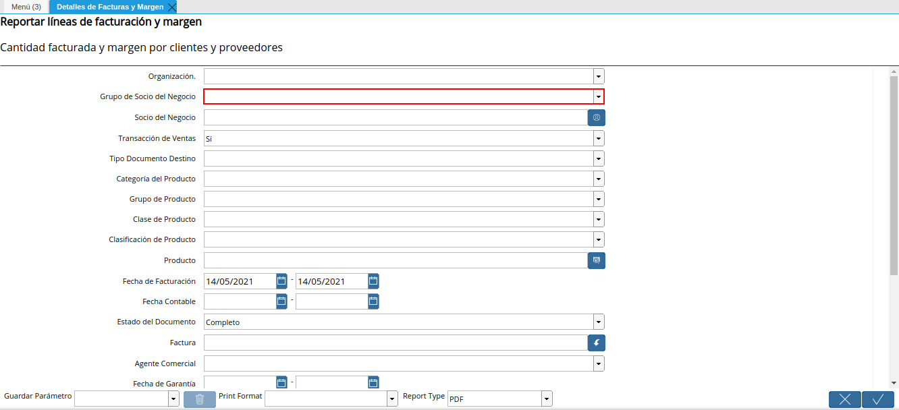
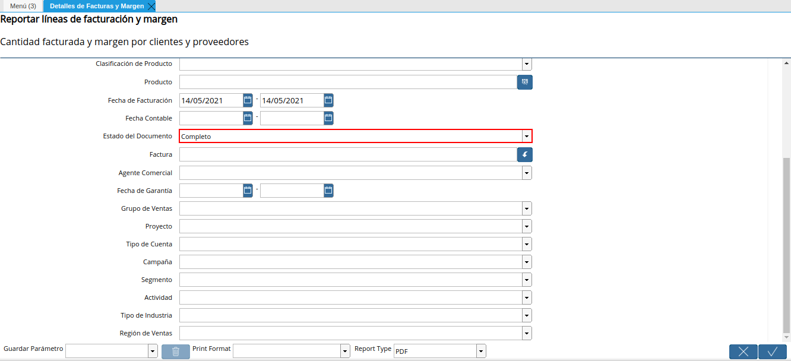

4.3. Detalles de Facturas y Margen (Margen según Compras)¶
Seleccione en el menú de ADempiere, la carpeta “Gestión de Ventas”, luego seleccione la carpeta “Facturas de Ventas”, por último seleccione la carpeta “Consulta de Facturas”. Finalmente, seleccione el reporte “Detalles de Facturas y Margen”.
Imagen 1. Menú de ADempiere
Podrá visualizar la ventana del reporte “Detalles de Facturas y Margen”, con diferentes campos que permiten filtrar la búsqueda de información en base a lo requerido por el usuario.
Imagen 2. Ventana del Reporte Detalles de Facturas y Margen
Seleccione en el campo “Organización”, la organización por la cual requiere filtrar la información.
Imagen 3. Campo Organización
Seleccione en el campo “Grupo de Socio del Negocio”, el grupo de socio del negocio por el cual requiere filtrar la información.

Imagen 4. Campo Grupo de Socio del Negocio
Seleccione en el campo “Socio del Negocio”, el socio del negocio por el cual requiere filtrar la información.
Imagen 5. Campo Socio del Negocio
Indique en el campo “Transacción de Ventas”, si el reporte que requiere generar contiene transacciones de ventas.
Imagen 6. Campo Transacción de Ventas
Seleccione en el campo “Tipo de Documento Destino”, el tipo de documento destino por el cual requiere filtrar la información.
Imagen 7. Campo Tipo de Documento Destino
Seleccione en el campo “Categoría del Producto”, la categoría del producto por la cual requiere filtrar la información.
Imagen 8. Campo Categoría del Producto
Seleccione en el campo “Grupo de Producto”, el grupo de producto por el cual requiere filtrar la información.
Imagen 9. Campo Grupo de Producto
Seleccione en el campo “Clase de Producto”, la clase de producto por la cual requiere filtrar la información.
Imagen 10. Campo Clase de Producto
Seleccione en el campo “Clasificación de Producto”, la clasificación de producto por la cual requiere filtrar la información.
Imagen 11. Campo Clasificación de Producto
Seleccione en el campo “Producto”, el producto por el cual requiere filtrar la información.
Imagen 12. Campo Producto
Indique en el campo “Fecha de Facturación”, el rango de fecha de facturación por el cual requiere filtrar la información.
Imagen 13. Campo Fecha de Facturación
Indique en el campo “Fecha Contable”, el rango de fecha contable por el cual requiere filtrar la información.
Imagen 14. Campo Fecha Contable

Seleccione en el campo “Estado del Documento”, el estado del documento por el cual requiere filtrar la información.

Imagen 15. Campo Estado del Documento
Seleccione en el campo “Factura”, la factura por la cual requiere filtrar la información.
Imagen 16. Campo Factura
Seleccione en el campo “Agente Comercial”, el agente comercial por el cual requiere filtrar la información.
Imagen 17. Campo Agente Comercial
Indique en el campo “Fecha de Garantía”, la fecha de garantía por la cual requiere filtrar la información.
Imagen 18. Campo Fecha de Garantía
Seleccione en el campo “Grupo de Ventas”, el grupo de ventas por el cual requiere filtrar la información.
Imagen 19. Campo Grupo de Ventas
Seleccione en el campo “Proyecto”, el proyecto por el cual requiere filtrar la información.
Imagen 20. campo proyecto
Seleccione en el campo “Tipo de Cuenta”, el tipo de cuenta por el cual requiere filtrar la información.
Imagen 21. Campo Tipo de Cuenta
Seleccione en el campo “Campaña”, la campaña por la cual requiere filtrar la información.
Imagen 22. Campo Campaña
Seleccione en el campo “Segmento”, el segmento por el cual requiere filtrar la información.
Imagen 23. Campo Segmento

Seleccione en el campo “Actividad”, la actividad por la cual requiere filtrar la información.
Imagen 24. Campo Actividad
Seleccione en el campo “Tipo de Industria”, el tipo de industria por el cual requiere filtrar la información.
Imagen 25. Campo Tipo de Industria
Seleccione en el campo “Región de Ventas”, la región de ventas por la cual requiere filtrar la información.
Imagen 26. Campo Región de Ventas
Seleccione la opción “OK”, para generar el reporte en base a lo seleccionado anteriormente.
Imagen 27. Opción OK
Podrá visualizar el reporte “Detalles de Facturas y Margen”, de la siguiente manera.
Note
Para generar el presente reporte, fueron consideradas las siguientes restricciones como ejemplo:
Organización: Organización
Socio del Negocio: E.R.P. Consultores y Asociados, C.A
Transacción de Ventas: Si
Fecha de Facturación: 11/05/2021 - 11/05/2021
Estado del Documento: Completo
Imagen 28. Reporte Detalles de Facturas y Margen
Seleccione en el campo “Tipo de Reporte”, la opción “PDF”, para visualizar el reporte en formato “PDF”
Imagen 29. Campo Tipo de Reporte
Seleccione en el campo “Formato de Impresión”, la opción “Detalles de Facturas (Margen Según Compras)”, para visualizar el reporte “Detalles de Facturas y Margen (Margen según Compras)”.
Imagen 30. Campo Formato de Impresión
Note
En el reporte se pueden observar las siguientes columnas:
Socio del Negocio: Nombre del cliente seleccionado para filtrar la información.
Factura: Documento fiscal al cual está asociada la venta
Fecha de la Factura: Fecha de la venta
Producto: Información del producto facturado (Código y Nombre)
Cantidad Facturada: Muestra la cantidad de productos vendidos en la factura
Precio Unitario: Precio de venta
Sub Total: Precio por la cantidad facturada
Precio de Compra: Indica el valor de la última “Orden de Compra” asociada al producto
% de Margen: Indica de manera porcentual cual es la ganancia que obtuvo el producto según su precio de compra comparado con el precio de venta
Monto del Margen: Ganancia que obtuvo el producto según su precio de compra comparado con el precio de venta